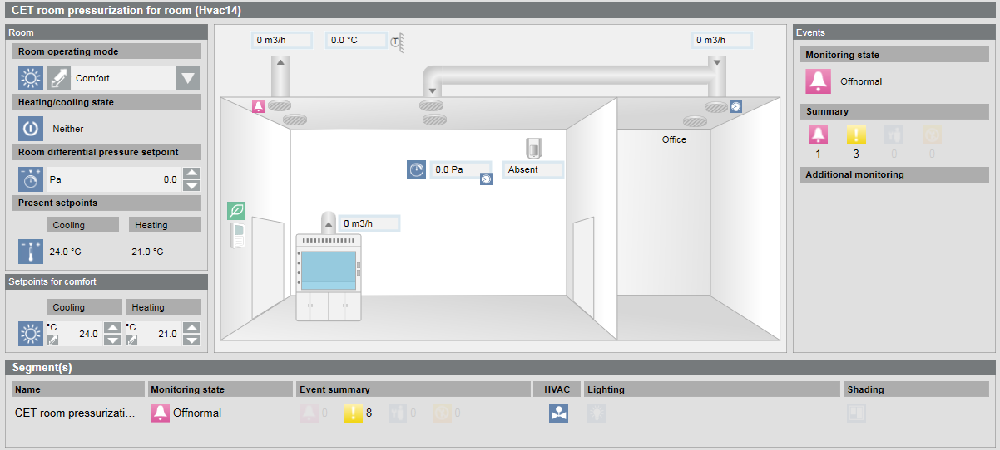

Modify Graphic for Room Lab
Scenario: The room graphic must be adapted to the actual room and ventilation requirements after you have integrated your lab room devices.

- The System Browser is in Operating mode.
- In System Browser, Logical View is selected.
- Select Logical > [Hierarchy name] > [Hierarchy level 1-n] > [Lab room].
- Displays the Default tab.
- In the Extended Operation tab, select the Room lab profile type property.
a. Click Change.
b. In the Value drop-down list, select option:
- 2 Supply air and extract air
- Unused
- Supply air and extract air
- Supply air and extract air + Anteroom
- Supply and extract air + cleaning
- Supply air and extract air + Office
The selected graphic is modified for this room lab.
c. Click Send.